New Jersey Enrollment Insights
Source:vignettes/nj-enrollment-insights.Rmd
nj-enrollment-insights.Rmd
theme_nj <- function() {
theme_minimal(base_size = 14) +
theme(
plot.title = element_text(face = "bold", size = 16),
plot.subtitle = element_text(color = "gray40"),
panel.grid.minor = element_blank(),
legend.position = "bottom"
)
}
nj_colors <- c("total" = "#2C3E50", "white" = "#3498DB", "black" = "#E74C3C",
"hispanic" = "#F39C12", "asian" = "#9B59B6", "charter" = "#1ABC9C",
"multiracial" = "#27AE60", "prek" = "#E67E22")
# Fetch 2020-2026 enrollment data (post-format-change for consistent structure)
years <- 2020:2026
enr_all <- purrr::map_df(years, ~{
tryCatch(
fetch_enr(.x, tidy = TRUE, use_cache = TRUE),
error = function(e) {
warning(paste("Year", .x, "failed:", conditionMessage(e)))
NULL
}
)
})
enr_current <- fetch_enr(2026, tidy = TRUE, use_cache = TRUE)
# State-level summary aggregated from district totals for time-series consistency
state_summary <- enr_all %>%
filter(is_district) %>%
group_by(end_year, subgroup, grade_level) %>%
summarize(n_students = sum(n_students, na.rm = TRUE), .groups = "drop")
state_totals <- state_summary %>%
filter(subgroup == "total_enrollment") %>%
select(end_year, grade_level, total = n_students)
state_summary <- state_summary %>%
left_join(state_totals, by = c("end_year", "grade_level")) %>%
mutate(pct = n_students / total)1. New Jersey educates 1.4 million students
New Jersey has one of the largest public school systems in the country. Enrollment recovered from the COVID dip to a 2025 peak, then fell about 1.7% in 2026 - the first real decline in years.
state_total <- state_summary %>%
filter(subgroup == "total_enrollment", grade_level == "TOTAL")
stopifnot(nrow(state_total) > 0)
state_total
#> # A tibble: 7 × 6
#> end_year subgroup grade_level n_students total pct
#> <dbl> <chr> <chr> <dbl> <dbl> <dbl>
#> 1 2020 total_enrollment TOTAL 1375828. 1375828. 1
#> 2 2021 total_enrollment TOTAL 1362400 1362400 1
#> 3 2022 total_enrollment TOTAL 1360916 1360916 1
#> 4 2023 total_enrollment TOTAL 1371921 1371921 1
#> 5 2024 total_enrollment TOTAL 1379988 1379988 1
#> 6 2025 total_enrollment TOTAL 1381182 1381182 1
#> 7 2026 total_enrollment TOTAL 1357450. 1357450. 1
ggplot(state_total, aes(x = end_year, y = n_students)) +
geom_line(linewidth = 1.5, color = nj_colors["total"]) +
geom_point(size = 3, color = nj_colors["total"]) +
scale_y_continuous(labels = comma, limits = c(0, NA)) +
labs(title = "New Jersey Educates 1.4 Million Students",
subtitle = "Enrollment recovered after COVID, then dipped in 2026",
x = "School Year", y = "Students") +
theme_nj()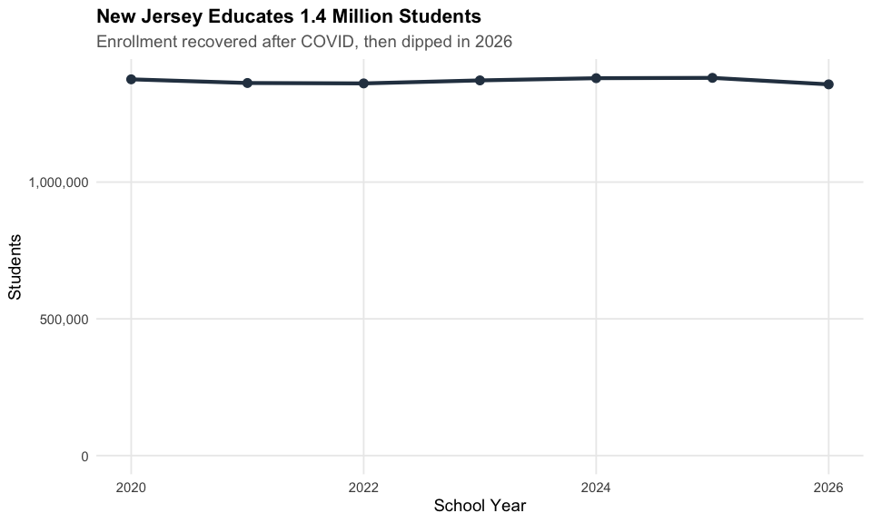
2. Charter enrollment grew 15% since 2020
New Jersey’s charter sector added 8,400+ students from 2020 to 2026, growing from 55,600 to 64,000 - and it kept growing in 2026 even as statewide enrollment fell.
charter_trend <- enr_all %>%
filter(is_district, subgroup == "total_enrollment", grade_level == "TOTAL") %>%
mutate(sector = ifelse(is_charter, "Charter", "Traditional")) %>%
group_by(end_year, sector) %>%
summarize(n_students = sum(n_students, na.rm = TRUE), .groups = "drop")
stopifnot(nrow(charter_trend) > 0)
charter_trend
#> # A tibble: 14 × 3
#> end_year sector n_students
#> <dbl> <chr> <dbl>
#> 1 2020 Charter 55604.
#> 2 2020 Traditional 1320225
#> 3 2021 Charter 57480
#> 4 2021 Traditional 1304920
#> 5 2022 Charter 58776.
#> 6 2022 Traditional 1302140.
#> 7 2023 Charter 58568.
#> 8 2023 Traditional 1313352.
#> 9 2024 Charter 61295
#> 10 2024 Traditional 1318693
#> 11 2025 Charter 63810.
#> 12 2025 Traditional 1317372.
#> 13 2026 Charter 64037
#> 14 2026 Traditional 1293412.
ggplot(charter_trend, aes(x = end_year, y = n_students, fill = sector)) +
geom_col(position = "dodge") +
scale_y_continuous(labels = comma) +
scale_fill_manual(values = c("Charter" = nj_colors["charter"],
"Traditional" = nj_colors["total"])) +
labs(title = "Charter Enrollment Grew 15% Since 2020",
subtitle = "From 55,600 to 64,000 students; charters grew even as 2026 enrollment fell",
x = "School Year", y = "Students", fill = "") +
theme_nj()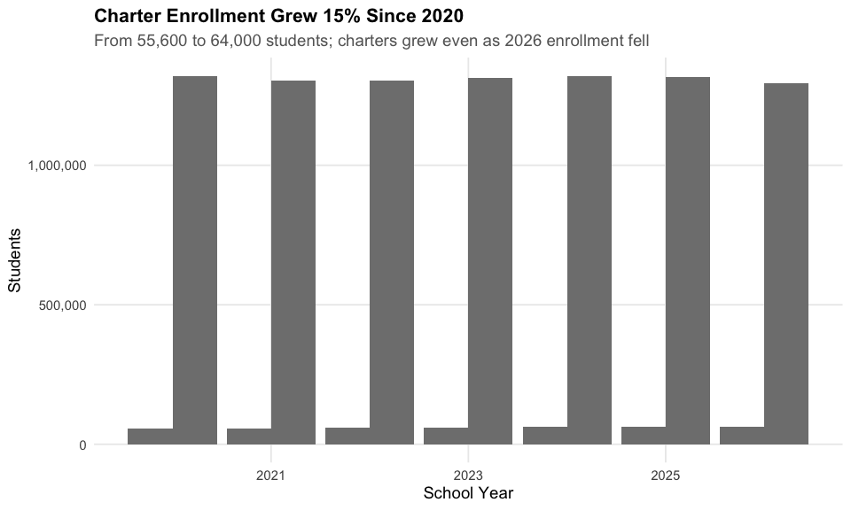
3. Hispanic students hit 35% and rising
Hispanic enrollment surged from 30% to 35% of all NJ students since 2020, one of the fastest demographic shifts in state history.
hispanic <- state_summary %>%
filter(subgroup == "hispanic", grade_level == "TOTAL")
stopifnot(nrow(hispanic) > 0)
hispanic %>% select(end_year, n_students, pct)
#> # A tibble: 7 × 3
#> end_year n_students pct
#> <dbl> <dbl> <dbl>
#> 1 2020 417042. 0.303
#> 2 2021 424170. 0.311
#> 3 2022 437187 0.321
#> 4 2023 455576. 0.332
#> 5 2024 470906 0.341
#> 6 2025 483504. 0.350
#> 7 2026 477187 0.352
ggplot(hispanic, aes(x = end_year, y = pct * 100)) +
geom_line(linewidth = 1.5, color = nj_colors["hispanic"]) +
geom_point(size = 3, color = nj_colors["hispanic"]) +
labs(title = "Hispanic Students Hit 35% and Rising",
subtitle = "From 30% to 35% of all NJ students since 2020",
x = "School Year", y = "Percent Hispanic") +
theme_nj()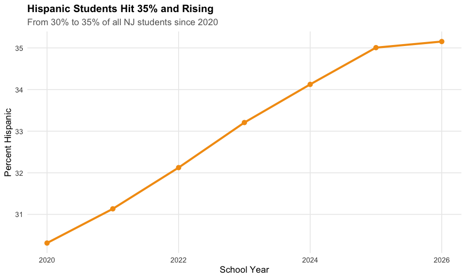
4. The Big Three: Newark, Jersey City, and Paterson
New Jersey’s three largest traditional districts educate over 90,000 students combined - nearly 7% of the state.
big_three_names <- c("Newark Public School District",
"Jersey City Public Schools",
"Paterson Public School District")
big_three_trend <- enr_all %>%
filter(is_district, !is_charter,
district_name %in% big_three_names,
subgroup == "total_enrollment", grade_level == "TOTAL")
stopifnot(nrow(big_three_trend) > 0)
big_three_trend %>% select(end_year, district_name, n_students)
#> end_year district_name n_students
#> 1 2021 Newark Public School District 40085
#> 2 2021 Jersey City Public Schools 26541
#> 3 2021 Paterson Public School District 25657
#> 4 2022 Newark Public School District 40607
#> 5 2022 Jersey City Public Schools 26890
#> 6 2022 Paterson Public School District 24495
#> 7 2023 Newark Public School District 41430
#> 8 2023 Jersey City Public Schools 26418
#> 9 2023 Paterson Public School District 26067
#> 10 2024 Newark Public School District 42600
#> 11 2024 Jersey City Public Schools 26023
#> 12 2024 Paterson Public School District 24090
#> 13 2025 Newark Public School District 43980
#> 14 2025 Jersey City Public Schools 25692
#> 15 2025 Paterson Public School District 23609
#> 16 2026 Newark Public School District 43216
#> 17 2026 Jersey City Public Schools 25307
#> 18 2026 Paterson Public School District 21849
ggplot(big_three_trend, aes(x = end_year, y = n_students, color = district_name)) +
geom_line(linewidth = 1.2) +
geom_point(size = 2.5) +
scale_y_continuous(labels = comma) +
labs(title = "The Big Three: Newark, Jersey City, and Paterson",
subtitle = "Combined enrollment of over 90,000 students",
x = "School Year", y = "Students", color = "") +
theme_nj()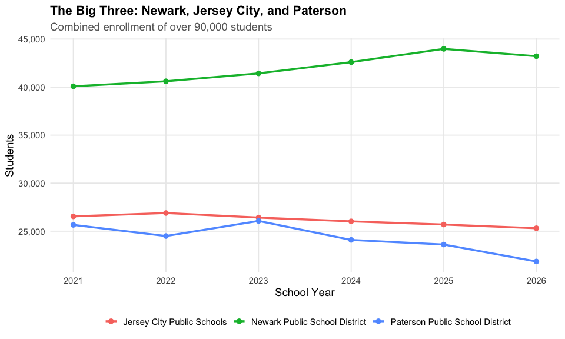
5. Kindergarten rebounded from COVID
New Jersey lost 9% of kindergartners during COVID. K enrollment recovered by 2024 but slipped again in 2026, while Pre-K kept surging past pre-pandemic levels.
k_trend <- state_summary %>%
filter(subgroup == "total_enrollment",
grade_level %in% c("PK", "K", "01", "06", "12")) %>%
mutate(grade_label = case_when(
grade_level == "PK" ~ "Pre-K",
grade_level == "K" ~ "Kindergarten",
grade_level == "01" ~ "Grade 1",
grade_level == "06" ~ "Grade 6",
grade_level == "12" ~ "Grade 12",
TRUE ~ grade_level
))
stopifnot(nrow(k_trend) > 0)
k_trend %>%
filter(grade_level %in% c("K", "PK")) %>%
select(end_year, grade_label, n_students)
#> # A tibble: 14 × 3
#> end_year grade_label n_students
#> <dbl> <chr> <dbl>
#> 1 2020 Kindergarten 90818
#> 2 2020 Pre-K 45013
#> 3 2021 Kindergarten 82604
#> 4 2021 Pre-K 56396
#> 5 2022 Kindergarten 86202
#> 6 2022 Pre-K 65350
#> 7 2023 Kindergarten 85873
#> 8 2023 Pre-K 71615
#> 9 2024 Kindergarten 90783
#> 10 2024 Pre-K 83463
#> 11 2025 Kindergarten 89428
#> 12 2025 Pre-K 87231
#> 13 2026 Kindergarten 86554
#> 14 2026 Pre-K 88063
ggplot(k_trend, aes(x = end_year, y = n_students, color = grade_label)) +
geom_line(linewidth = 1.2) +
geom_point(size = 2.5) +
scale_y_continuous(labels = comma) +
labs(title = "Kindergarten Rebounded from COVID",
subtitle = "K enrollment dipped but Pre-K surged past pre-pandemic levels",
x = "School Year", y = "Students", color = "") +
theme_nj()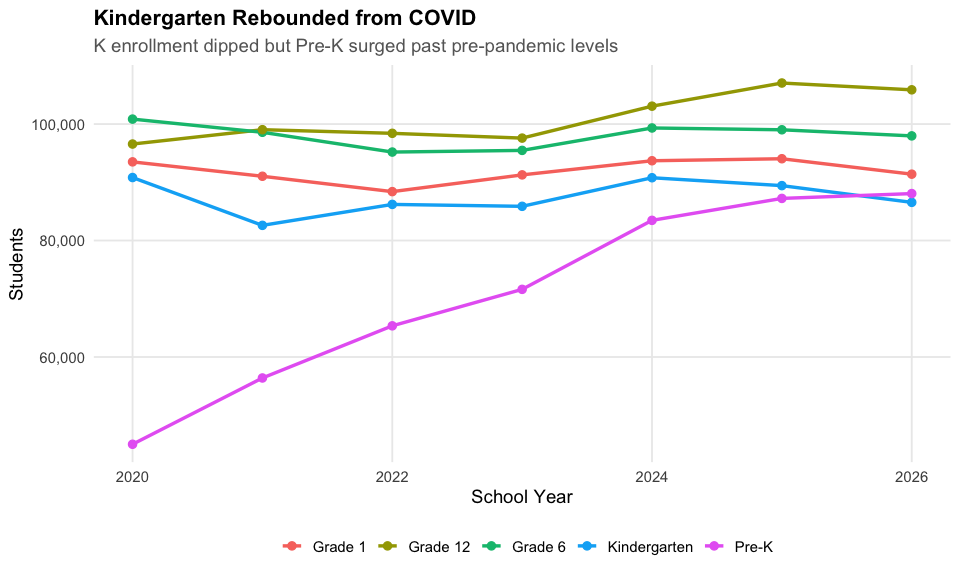
6. Free/reduced lunch ranges from 98% to under 5%
Urban districts like Passaic City (92%) have nearly all students on free/reduced lunch while affluent suburbs like Millburn (under 2%) have almost none - a stark measure of NJ’s wealth divide.
frl <- enr_current %>%
filter(is_district, !is_charter,
subgroup == "free_reduced_lunch", grade_level == "TOTAL",
!is.na(pct), n_students >= 100) %>%
arrange(desc(pct)) %>%
head(15) %>%
mutate(district_label = reorder(district_name, pct))
stopifnot(nrow(frl) > 0)
frl %>% select(district_name, n_students, pct)
#> district_name n_students pct
#> 1 Kipp: Cooper Norcross, A New Jersey Nonprofit Corporation 2131.500 0.980
#> 2 Mastery Schools Of Camden, Inc. 2788.250 0.950
#> 3 Camden Prep, Inc. 1425.177 0.937
#> 4 Passaic City School District 10131.966 0.918
#> 5 Lakewood Township School District 3381.419 0.898
#> 6 Woodlynne School District 343.000 0.875
#> 7 Union City School District 10409.202 0.867
#> 8 Seaside Heights School District 127.050 0.847
#> 9 Atlantic City School District 5104.476 0.839
#> 10 New Brunswick School District 6929.422 0.838
#> 11 Wildwood City School District 629.067 0.831
#> 12 Elizabeth Public Schools 22034.100 0.825
#> 13 West New York School District 6069.653 0.821
#> 14 Long Branch Public School District 4069.202 0.819
#> 15 Bridgeton City School District 5012.926 0.799
ggplot(frl, aes(x = district_label, y = pct * 100)) +
geom_col(fill = nj_colors["total"]) +
coord_flip() +
labs(title = "Free/Reduced Lunch Varies Dramatically",
subtitle = "Some districts approach 100% while affluent suburbs are under 5%",
x = "", y = "Percent Free/Reduced Lunch") +
theme_nj()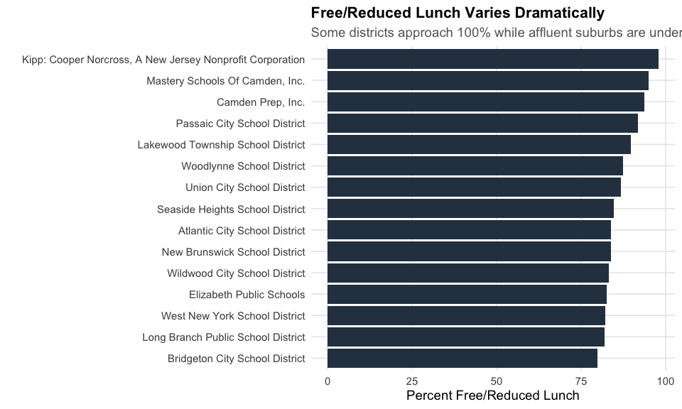
7. White students dropped below 37%
White students went from 42% to under 37% of NJ public school enrollment since 2020. NJ public schools are now decisively majority-minority.
demo <- state_summary %>%
filter(subgroup %in% c("white", "hispanic", "black", "asian"),
grade_level == "TOTAL") %>%
mutate(subgroup = factor(subgroup, levels = c("white", "hispanic", "black", "asian")))
stopifnot(nrow(demo) > 0)
demo %>% select(end_year, subgroup, pct) %>%
mutate(pct = round(pct * 100, 1)) %>%
tidyr::pivot_wider(names_from = subgroup, values_from = pct)
#> # A tibble: 7 × 5
#> end_year asian black hispanic white
#> <dbl> <dbl> <dbl> <dbl> <dbl>
#> 1 2020 10.3 14.6 30.3 42
#> 2 2021 10.4 14.9 31.1 40.6
#> 3 2022 10.3 14.8 32.1 39.6
#> 4 2023 10.3 14.6 33.2 38.5
#> 5 2024 10.3 14.4 34.1 37.6
#> 6 2025 10.3 14.3 35 36.7
#> 7 2026 10.4 14.1 35.2 36.5
ggplot(demo, aes(x = end_year, y = pct * 100, color = subgroup)) +
geom_line(linewidth = 1.2) +
geom_point(size = 2.5) +
scale_color_manual(values = nj_colors, labels = c("White", "Hispanic", "Black", "Asian")) +
labs(title = "White Students Dropped Below 37%",
subtitle = "NJ public schools are now decisively majority-minority",
x = "School Year", y = "Percent of Students", color = "") +
theme_nj()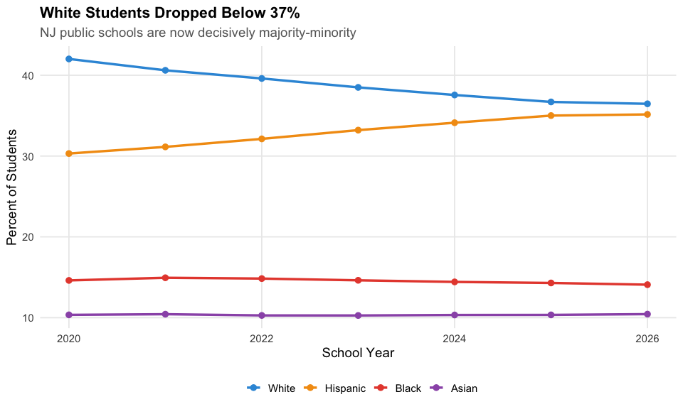
8. English learners approach 45% in some districts
ELL students make up nearly 45% in Lakewood and Plainfield but under 1% in most suburban districts - a concentration driven by immigration patterns.
ell <- enr_current %>%
filter(is_district, !is_charter,
subgroup == "lep", grade_level == "TOTAL",
!is.na(pct), n_students >= 50) %>%
arrange(desc(pct)) %>%
head(15) %>%
mutate(district_label = reorder(district_name, pct))
stopifnot(nrow(ell) > 0)
ell %>% select(district_name, n_students, pct)
#> district_name n_students pct
#> 1 Lakewood Township School District 1690.7095 0.449
#> 2 Plainfield Public School District 4152.9000 0.436
#> 3 Dover Public School District 1375.3460 0.434
#> 4 Irvington Public School District 3314.9540 0.421
#> 5 Elizabeth Public Schools 11057.1120 0.414
#> 6 New Brunswick School District 3365.4830 0.407
#> 7 Paterson Public School District 8848.8450 0.405
#> 8 Trenton Public School District 5794.9385 0.403
#> 9 Red Bank Borough Public School District 452.6280 0.396
#> 10 Union City School District 4694.3460 0.391
#> 11 Perth Amboy Public School District 3820.4250 0.383
#> 12 Passaic City School District 4083.6900 0.370
#> 13 Bridgeton City School District 2308.8320 0.368
#> 14 Bound Brook School District 650.1565 0.343
#> 15 Palisades Park School District 559.7210 0.331
ggplot(ell, aes(x = district_label, y = pct * 100)) +
geom_col(fill = nj_colors["hispanic"]) +
coord_flip() +
labs(title = "English Learners Approach 45% in Some Districts",
subtitle = "Concentrated in urban areas; under 1% in most suburbs",
x = "", y = "Percent English Language Learners") +
theme_nj()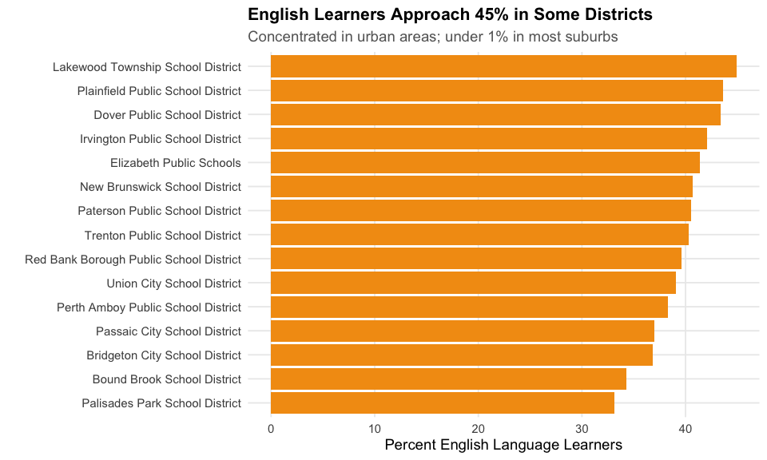
9. Top 10 districts serve 15% of all students
Just 10 out of nearly 580 districts educate about 1 in 7 NJ students. Newark alone has 43,000.
top_10 <- enr_current %>%
filter(is_district, !is_charter,
subgroup == "total_enrollment", grade_level == "TOTAL") %>%
arrange(desc(n_students)) %>%
head(10) %>%
mutate(district_label = reorder(district_name, n_students))
stopifnot(nrow(top_10) > 0)
top_10 %>% select(district_name, n_students)
#> district_name n_students
#> 1 Newark Public School District 43216.0
#> 2 Elizabeth Public Schools 26708.0
#> 3 Jersey City Public Schools 25307.0
#> 4 Paterson Public School District 21849.0
#> 5 Edison Township School District 16191.0
#> 6 Trenton Public School District 14379.5
#> 7 Toms River Regional School District 13925.0
#> 8 Woodbridge Township School District 13425.0
#> 9 Hamilton Township Public School District 12112.0
#> 10 Union City School District 12006.0
ggplot(top_10, aes(x = district_label, y = n_students)) +
geom_col(fill = nj_colors["total"]) +
coord_flip() +
scale_y_continuous(labels = comma) +
labs(title = "Top 10 Districts Serve 15% of All Students",
subtitle = "Just 10 out of nearly 580 districts educate about 1 in 7 NJ students",
x = "", y = "Students") +
theme_nj()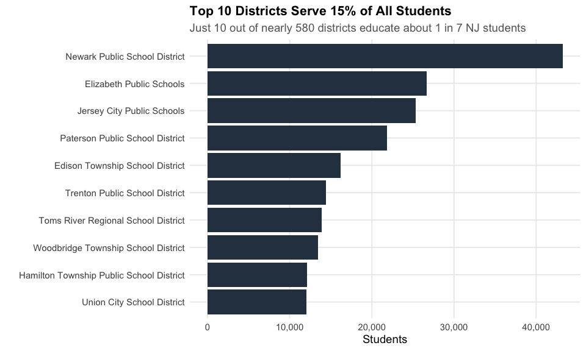
10. Multiracial students: fastest-growing category
Multiracial students grew 46% since 2020 - from 2.4% to 3.5% of enrollment - making it the fastest-growing racial category in NJ.
multi <- state_summary %>%
filter(subgroup == "multiracial", grade_level == "TOTAL")
stopifnot(nrow(multi) > 0)
multi %>% select(end_year, n_students, pct)
#> # A tibble: 7 × 3
#> end_year n_students pct
#> <dbl> <dbl> <dbl>
#> 1 2020 32622 0.0237
#> 2 2021 34518 0.0253
#> 3 2022 37474 0.0275
#> 4 2023 40934. 0.0298
#> 5 2024 43436. 0.0315
#> 6 2025 45246. 0.0328
#> 7 2026 47160 0.0347
ggplot(multi, aes(x = end_year, y = pct * 100)) +
geom_line(linewidth = 1.5, color = nj_colors["multiracial"]) +
geom_point(size = 3, color = nj_colors["multiracial"]) +
labs(title = "Multiracial Students: Fastest-Growing Category",
subtitle = "From 2.4% to 3.5% of enrollment since 2020 (46% growth)",
x = "School Year", y = "Percent Multiracial") +
theme_nj()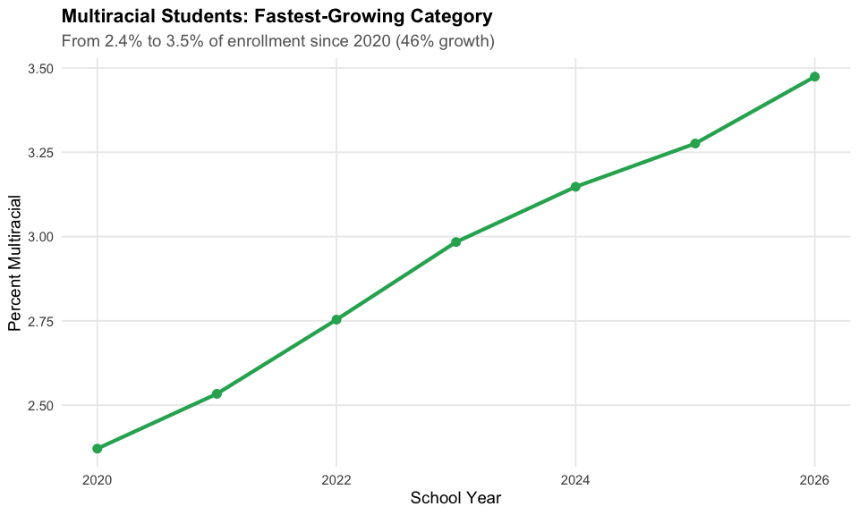
11. Pre-K nearly doubled since 2020
NJ’s Pre-K enrollment surged from 45,000 to 88,000 since 2020 - nearly doubling, fueled by the state’s expanding universal pre-K program.
prek <- state_summary %>%
filter(subgroup == "total_enrollment", grade_level == "PK")
stopifnot(nrow(prek) > 0)
prek %>% select(end_year, n_students)
#> # A tibble: 7 × 2
#> end_year n_students
#> <dbl> <dbl>
#> 1 2020 45013
#> 2 2021 56396
#> 3 2022 65350
#> 4 2023 71615
#> 5 2024 83463
#> 6 2025 87231
#> 7 2026 88063
ggplot(prek, aes(x = end_year, y = n_students)) +
geom_line(linewidth = 1.5, color = nj_colors["prek"]) +
geom_point(size = 3, color = nj_colors["prek"]) +
scale_y_continuous(labels = comma, limits = c(0, NA)) +
labs(title = "Pre-K Nearly Doubled Since 2020",
subtitle = "From 45,000 to 88,000 students - NJ's universal pre-K expansion",
x = "School Year", y = "Pre-K Students") +
theme_nj()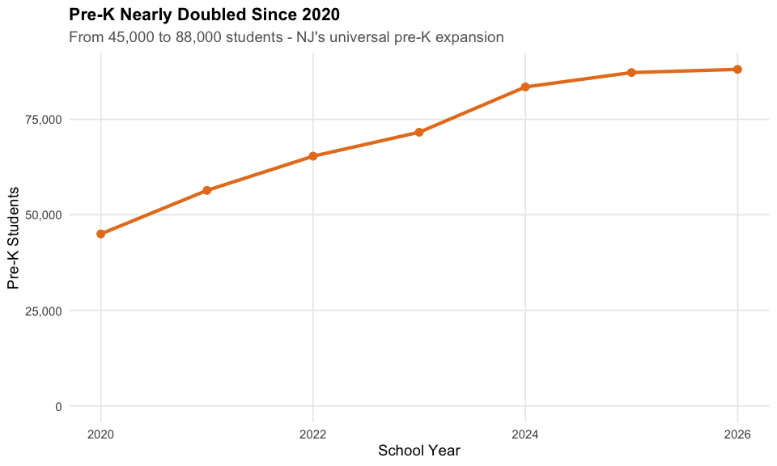
12. Bergen County has more students than several US states
With 130,000+ students, Bergen County alone has a larger public school system than entire states like Wyoming, Vermont, and North Dakota.
county_enr <- enr_current %>%
filter(is_district, subgroup == "total_enrollment", grade_level == "TOTAL") %>%
group_by(county_name) %>%
summarize(n_students = sum(n_students, na.rm = TRUE),
n_districts = n(), .groups = "drop") %>%
filter(county_name != "Charters") %>%
arrange(desc(n_students)) %>%
head(15) %>%
mutate(county_label = reorder(county_name, n_students))
stopifnot(nrow(county_enr) > 0)
county_enr
#> # A tibble: 15 × 4
#> county_name n_students n_districts county_label
#> <chr> <dbl> <int> <fct>
#> 1 Bergen 130172. 76 Bergen
#> 2 Essex 125813 23 Essex
#> 3 Middlesex 121810. 25 Middlesex
#> 4 Union 95696. 23 Union
#> 5 Monmouth 87674 51 Monmouth
#> 6 Hudson 80614 13 Hudson
#> 7 Camden 77633 39 Camden
#> 8 Passaic 73151 20 Passaic
#> 9 Morris 72082 40 Morris
#> 10 Burlington 68970 39 Burlington
#> 11 Ocean 63832. 28 Ocean
#> 12 Mercer 58960 12 Mercer
#> 13 Somerset 48696. 19 Somerset
#> 14 Gloucester 46076. 28 Gloucester
#> 15 Atlantic 40586 24 Atlantic
ggplot(county_enr, aes(x = county_label, y = n_students)) +
geom_col(fill = nj_colors["total"]) +
coord_flip() +
scale_y_continuous(labels = comma) +
labs(title = "Bergen County Has More Students Than Several US States",
subtitle = "Top 15 NJ counties by enrollment",
x = "", y = "Students") +
theme_nj()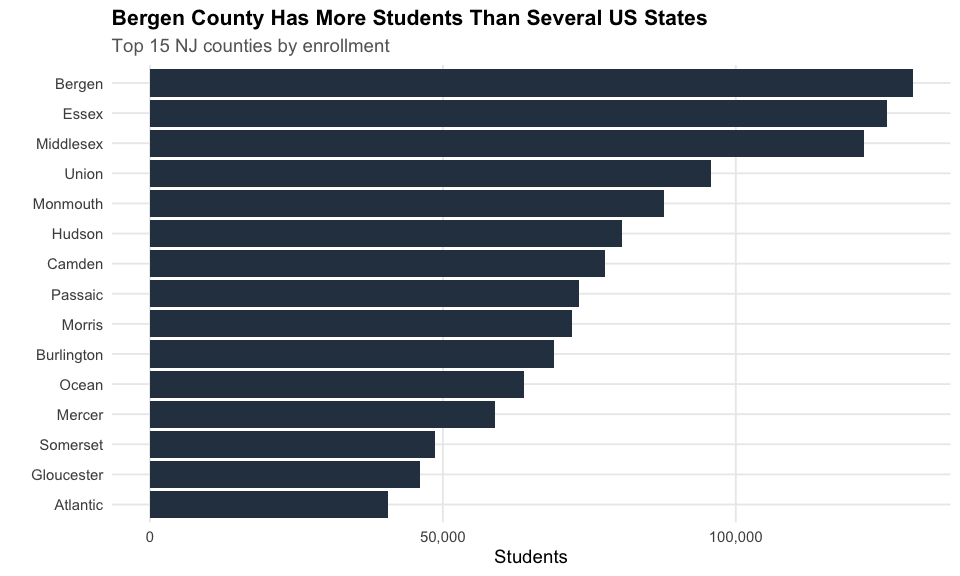
13. Most NJ districts are tiny
Half of NJ’s 580 districts have fewer than 1,200 students. The median district is smaller than a single large high school.
dist_sizes <- enr_current %>%
filter(is_district, !is_charter,
subgroup == "total_enrollment", grade_level == "TOTAL")
stopifnot(nrow(dist_sizes) > 0)
cat("Districts:", nrow(dist_sizes), "\n")
#> Districts: 579
cat("Median:", median(dist_sizes$n_students, na.rm = TRUE), "\n")
#> Median: 1162
cat("Under 1000:", sum(dist_sizes$n_students < 1000, na.rm = TRUE), "\n")
#> Under 1000: 266
cat("Over 10000:", sum(dist_sizes$n_students > 10000, na.rm = TRUE), "\n")
#> Over 10000: 14
ggplot(dist_sizes, aes(x = n_students)) +
geom_histogram(binwidth = 500, fill = nj_colors["total"], color = "white") +
geom_vline(xintercept = median(dist_sizes$n_students, na.rm = TRUE),
linetype = "dashed", color = "red", linewidth = 1) +
scale_x_continuous(labels = comma) +
labs(title = "Most NJ Districts Are Tiny",
subtitle = "Half have fewer than 1,200 students (red line = median)",
x = "Students", y = "Number of Districts") +
theme_nj()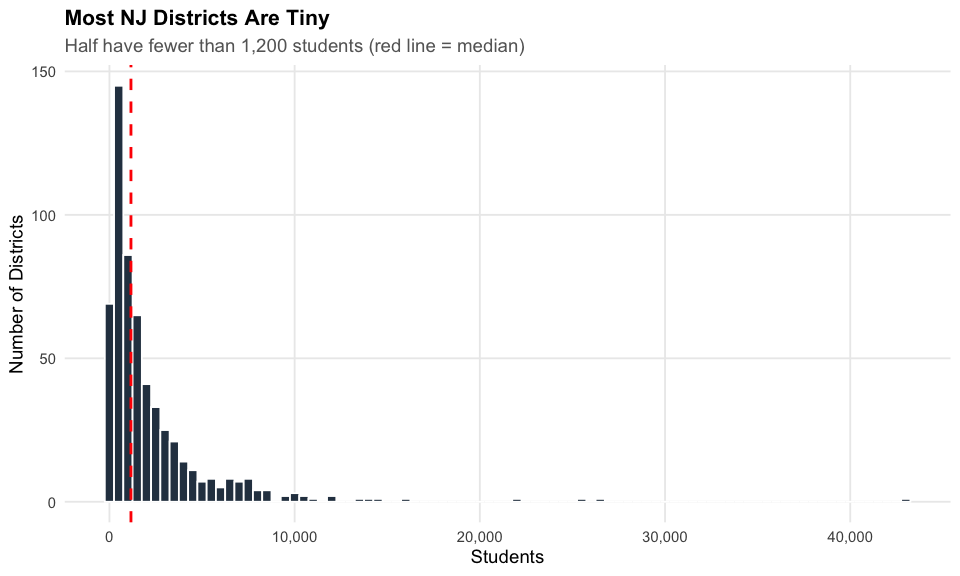
14. NJ’s enrollment pyramid shows the pre-K boom
The 2026 grade-level distribution reveals the pre-K surge: PK enrollment (88K) has now surpassed Kindergarten (87K), reflecting NJ’s universal pre-K push.
grade_enr <- state_summary %>%
filter(end_year == 2026, subgroup == "total_enrollment",
grade_level != "TOTAL", !is.na(grade_level)) %>%
mutate(grade_label = case_when(
grade_level == "PK" ~ "Pre-K",
grade_level == "K" ~ "K",
TRUE ~ paste("Grade", grade_level)
),
grade_order = case_when(
grade_level == "PK" ~ 0,
grade_level == "K" ~ 1,
TRUE ~ as.numeric(grade_level) + 1
)) %>%
arrange(grade_order) %>%
mutate(grade_label = factor(grade_label, levels = grade_label))
stopifnot(nrow(grade_enr) > 0)
grade_enr %>% select(grade_label, n_students)
#> # A tibble: 14 × 2
#> grade_label n_students
#> <fct> <dbl>
#> 1 Pre-K 88063
#> 2 K 86554
#> 3 Grade 01 91396
#> 4 Grade 02 93705
#> 5 Grade 03 94599
#> 6 Grade 04 97367
#> 7 Grade 05 96650
#> 8 Grade 06 97968
#> 9 Grade 07 98315
#> 10 Grade 08 99814
#> 11 Grade 09 102207
#> 12 Grade 10 102068.
#> 13 Grade 11 102865
#> 14 Grade 12 105879
ggplot(grade_enr, aes(x = grade_label, y = n_students)) +
geom_col(fill = nj_colors["total"]) +
scale_y_continuous(labels = comma) +
labs(title = "NJ's Enrollment Pyramid Shows the Pre-K Boom",
subtitle = "Pre-K (88K) now exceeds Kindergarten (87K) in 2026",
x = "Grade Level", y = "Students") +
theme_nj() +
theme(axis.text.x = element_text(angle = 45, hjust = 1))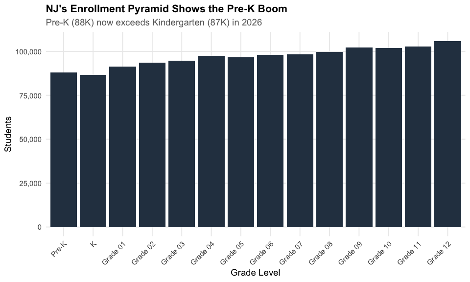
15. NJ’s poverty gap: 96 points between districts
The highest-poverty NJ districts have 98% of students on free/reduced lunch. Affluent Westfield has under 2%. This 96-point gap captures NJ’s extreme wealth inequality.
# Compare highest and lowest FRL districts
frl_all <- enr_current %>%
filter(is_district, !is_charter,
subgroup == "free_reduced_lunch", grade_level == "TOTAL",
!is.na(pct), n_students >= 100) %>%
arrange(desc(pct))
top_5 <- frl_all %>% head(5) %>% mutate(group = "Highest FRL")
bottom_5 <- frl_all %>% tail(5) %>% mutate(group = "Lowest FRL")
frl_extremes <- bind_rows(top_5, bottom_5) %>%
mutate(district_label = reorder(district_name, pct))
stopifnot(nrow(frl_extremes) > 0)
frl_extremes %>% select(district_name, n_students, pct, group)
#> district_name n_students pct
#> 1 Kipp: Cooper Norcross, A New Jersey Nonprofit Corporation 2131.5000 0.980
#> 2 Mastery Schools Of Camden, Inc. 2788.2500 0.950
#> 3 Camden Prep, Inc. 1425.1770 0.937
#> 4 Passaic City School District 10131.9660 0.918
#> 5 Lakewood Township School District 3381.4190 0.898
#> 6 Pequannock Township School District 100.0750 0.050
#> 7 Scotch Plains-Fanwood School District 268.6990 0.047
#> 8 Bernards Township School District 130.6740 0.029
#> 9 Ridgewood Public School District 128.9160 0.024
#> 10 Livingston Board Of Education School District 121.0395 0.019
#> group
#> 1 Highest FRL
#> 2 Highest FRL
#> 3 Highest FRL
#> 4 Highest FRL
#> 5 Highest FRL
#> 6 Lowest FRL
#> 7 Lowest FRL
#> 8 Lowest FRL
#> 9 Lowest FRL
#> 10 Lowest FRL
ggplot(frl_extremes, aes(x = district_label, y = pct * 100, fill = group)) +
geom_col() +
coord_flip() +
scale_fill_manual(values = c("Highest FRL" = nj_colors["black"],
"Lowest FRL" = nj_colors["asian"])) +
labs(title = "NJ's Poverty Gap: 96 Points Between Districts",
subtitle = "Highest-poverty districts (98% FRL) vs Westfield (under 2%)",
x = "", y = "Percent Free/Reduced Lunch", fill = "") +
theme_nj()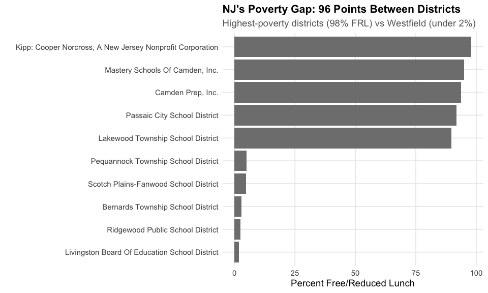
sessionInfo()
#> R version 4.6.0 (2026-04-24)
#> Platform: x86_64-pc-linux-gnu
#> Running under: Ubuntu 24.04.4 LTS
#>
#> Matrix products: default
#> BLAS: /usr/lib/x86_64-linux-gnu/openblas-pthread/libblas.so.3
#> LAPACK: /usr/lib/x86_64-linux-gnu/openblas-pthread/libopenblasp-r0.3.26.so; LAPACK version 3.12.0
#>
#> locale:
#> [1] LC_CTYPE=C.UTF-8 LC_NUMERIC=C LC_TIME=C.UTF-8
#> [4] LC_COLLATE=C.UTF-8 LC_MONETARY=C.UTF-8 LC_MESSAGES=C.UTF-8
#> [7] LC_PAPER=C.UTF-8 LC_NAME=C LC_ADDRESS=C
#> [10] LC_TELEPHONE=C LC_MEASUREMENT=C.UTF-8 LC_IDENTIFICATION=C
#>
#> time zone: UTC
#> tzcode source: system (glibc)
#>
#> attached base packages:
#> [1] stats graphics grDevices utils datasets methods base
#>
#> other attached packages:
#> [1] scales_1.4.0 dplyr_1.2.1 ggplot2_4.0.3 njschooldata_0.9.8
#>
#> loaded via a namespace (and not attached):
#> [1] utf8_1.2.6 sass_0.4.10 generics_0.1.4 tidyr_1.3.2
#> [5] stringi_1.8.7 hms_1.1.4 digest_0.6.39 magrittr_2.0.5
#> [9] evaluate_1.0.5 grid_4.6.0 timechange_0.4.0 RColorBrewer_1.1-3
#> [13] fastmap_1.2.0 cellranger_1.1.0 jsonlite_2.0.0 httr_1.4.8
#> [17] purrr_1.2.2 codetools_0.2-20 textshaping_1.0.5 jquerylib_0.1.4
#> [21] cli_3.6.6 rlang_1.2.0 withr_3.0.2 cachem_1.1.0
#> [25] yaml_2.3.12 downloader_0.4.1 tools_4.6.0 tzdb_0.5.0
#> [29] curl_7.1.0 vctrs_0.7.3 R6_2.6.1 lifecycle_1.0.5
#> [33] lubridate_1.9.5 snakecase_0.11.1 stringr_1.6.0 fs_2.1.0
#> [37] ragg_1.5.2 janitor_2.2.1 pkgconfig_2.0.3 desc_1.4.3
#> [41] pkgdown_2.2.0 pillar_1.11.1 bslib_0.11.0 gtable_0.3.6
#> [45] glue_1.8.1 systemfonts_1.3.2 xfun_0.57 tibble_3.3.1
#> [49] tidyselect_1.2.1 knitr_1.51 farver_2.1.2 htmltools_0.5.9
#> [53] labeling_0.4.3 rmarkdown_2.31 readr_2.2.0 compiler_4.6.0
#> [57] S7_0.2.2 readxl_1.5.0